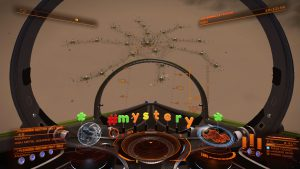

CMDR Robbie discovers another Barnacle Forest, the second found so far. It is located at:
Pleiades Sector PN-T b3-0 – Planet A 5
Coordinates:
Lat: -4.4946
Long: 145.6557
If you scan the planet with the surface scanner it will be shown in the Navigation Panel as Thargoid Barnacle (5).

Futher information available on the Frontier Forums